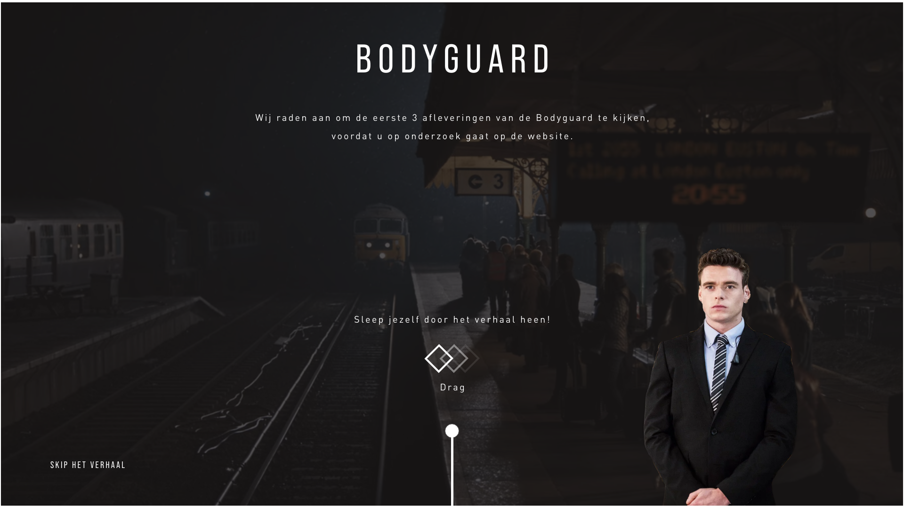
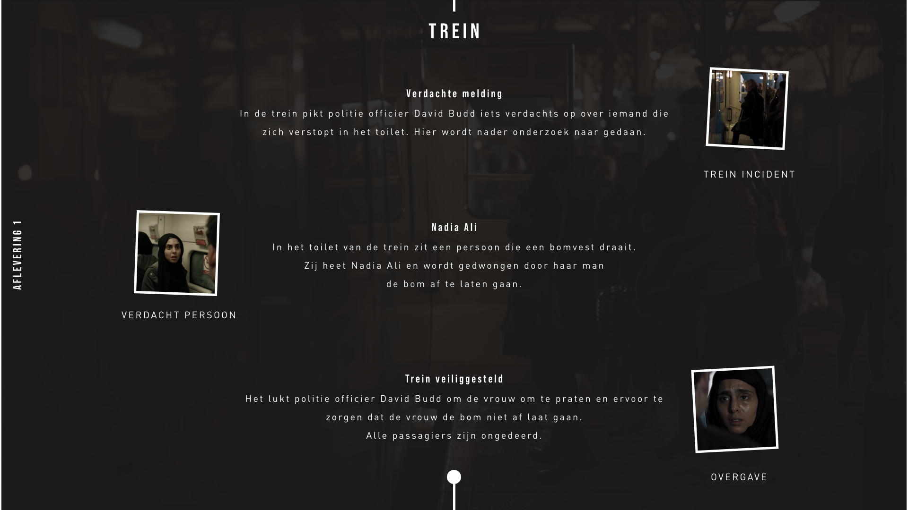
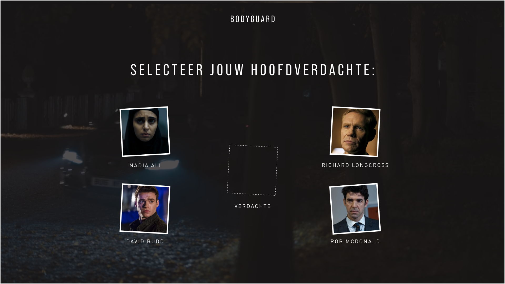
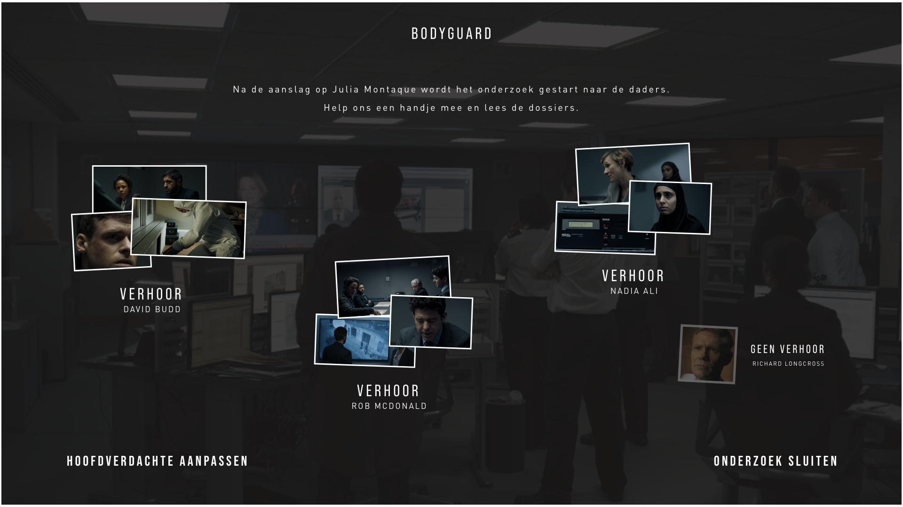

Voor het laaste vak van de minor is ons de opdracht geven een interface te maken voor een aantal te kieze casussen. Ik heb gekozen om voor een eigen casus te kiezen en ik heb gekozen voor de serie The Bodyguard op Netflix. Deze serie bevat 6 afleveringen, waarvan ik de eerste 3 kort heb samengevat en dieper in ben gegaan op de laatste afleveringen.
   Om het prototype te zien van de website, ga dan naar deze website.